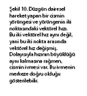

2. Bölüm - GÖRELİLİK ÖNCESİ ve GÖRELİLİĞE GEÇİŞ
5- Görelilikten önce ne vardı?
- Konumuz olan görelilik bağlamında o zaman Einstein özel göreliliği ve mekaniği, Newton mekaniği ve Galileo göreliliğinden sonra gelen kuram/yasa. Peki Galileo öncesi ne vardı?
- İlkçağ filozoflarının, görelilik diye bir dertleri yoktu. Neden olsun ki?..
- Bir dakika, bir dakika... Filozofların görelilikle ya da fizikle ilgisi ne?
- Filozof kelimesinin orijinal anlamı, “bilgiyi seven”dir. İlkçağlarda insanlığın “bilimsel”5 bilgi birikimi, bir kişinin, yeterince yetenekli ve istekli ise bu bilginin tamamını öğrenebileceği kadar azdı; dolayısıyla bu bilgilerle ilgilenen ve/veya bu bilgileri üreten kişilere “filozof” dendi. Yani fizikçi, kimyacı vb. ayrımlara gerek yoktu. Bu ayrımlar oluştuktan sonra, bilgi kavramının kendisi üzerinde çalışanlara filozof denmeye devam edilmiştir ama, ilkçağ filozofları hem günümüz anlamında filozof, hem fizikçi, hem kimyacı, hem astronom, hem biyolog, hatta bazen aynı zamanda mühendistiler.
5)Bilimsel kelimesinde tırnak kullanmamızın iki sebebi var: Birincisi, yemek pişirme veya avcılık usülleri gibi beceri veya “zanaat”ların beraberinde getirdiği bilgiyi kastetmiyoruz; bunların bütünü büyük olasılıkla taş devrinde bile bir kişinin kapasitesinin çok ötesindeydi. İkincisi, günümüzde bildiğimiz anlamda bilimsel yöntem, ilkçağlarda henüz yaygınlaşmamış olduğundan, bu bilgilerin bir kısmı günümüz kriterlerine göre bilimsel, hatta doğru bile olmayabilir.
- Yani karpuzlar küçük olduğundan, bir koltuğa üç-beş karpuz sığdırılabiliyordu... Peki, neden görelilik dertleri yoktu?
- Çünkü, onlar dünyanın evrenin merkezinde ve durağan olduğunu düşünüyorlardı. Bu durumda da senin ikinci sorunun başında dile getirdiğin “doğrusu duran kişinin gördüğüdür” iddiasındaki “duran kişi” kavramını sorgulamaya gerek duymadılar; çünkü gerçek ve mutlak bir “durağanlık hali” tanımlayabildiklerini düşünüyorlardı.
- Bunların en önemlisi Aristoteles’ti, değil mi?
- Evet. Aristoteles yalnızca kendi eserleri bakımından değil, yazdıklarıyla bize kendinden öncekiler hakkında bilgi vermesiyle de önemlidir. Örneğin, Eski Yunan filozoflarının Ay’ın evrelerini, Ay ve Güneş tutulmalarını, dünyanın yuvarlaklığını anladıklarını onun aracılığıyla biliyoruz.
- Ben dünyanın yuvarlaklığı Kristof Kolomb ve Magellan ile anlaşıldı sanıyordum...
- Bu yaygın bir yanılgıdır. Hatta Eratostenes adlı filozof, MÖ 200 civarında dünyanın yarıçapını ölçmüş, ortaçağ İs

Şekil 3. Aristoteles sisteminin kimyasına göre, cisimler bu dört elementin çeşitli birleşimlerinden oluşuyordu. (Sidney Harris’in bir karikatürü, Chalk up another one adlı seçkiden.)
lam astronomları bu ölçümün hassaslığını artırmışlardır. Bu halk tarafından genelde bilinmeyebilirse de, eğitimli kişiler tarafından biliniyordu. Dolayısıyla, teorik olarak batıya giderek Çin’e ulaşılabileceği de apaçıktı...
- Peki niye Kolomb’dan önce kimse bunu denemedi?
- Gidilmesi gereken mesafeyi hesapladıklarında, gemiyle gidilmesi imkânsız bir mesafe buluyorlardı da ondan...
- Nasıl yani? Neden bir geminin gidebileceği mesafenin sınırı olsun ki? Batmadıktan sonra gittikçe gider...
- Açık denizde giden bir gemi, mürettebatın yiyeceğini ve suyunu da taşımak zorundadır. Hiçbir karaya uğramazsa, eninde sonunda bunlar biter; zaten yiyeceklerin de çoğu bozulur.
- Peki Kolomb nasıl cesaret etti? Gemiye daha fazla yiyecek-içecek sığdırmanın yolunu mu buldu, ya da bir yiyecek saklama teknolojisi mi icat etti?
- Hiçbiri. Dünyanın yarıçapını yanlış hesapladı; dolayısıyla Asya’ya olan mesafenin aslından çok daha kısa olduğunu zannetti.
- Yani tam cahil cesareti desenize... Yani Avrupa’dan Asya’ya kadar deniz olsa, Amerika olmasa, açlık ve susuzluktan öleceklerdi. Şansa bak...
- Her neyse, Aristoteles’den bahsediyorduk... Aristoteles’in hareket kuramının en önemli bileşeni, nesnelerin doğal durumunun hareketsizlik olmasıdır. Yani üzerinde herhangi bir etki bulunmayan bir nesne, birazdan doğal halini alır ve durur.
- Neden?
- Çünkü, Aristoteles’e göre nesneler, “ait oldukları yere” gitmek eğilimine sahiptir. Oraya varınca ya da kendi ait olduğu yere gitmeye çalışan başka bir nesneyle çarpışınca, dururlar. Buna “teleolojik yaklaşım” deniyor. Yani
-

Şekil 4. Yıldız izleri. Siz nasıl açıklardınız?
hareketi geçmiş ya da şimdiki zamanla değil, gelecek ile; “üzerine şöyle şöyle bir kuvvet etki ettiği için” değil de, “ait olduğu yere varabilmek için” diye açıklamaya çalışmaya...
- Herhangi bir nesnenin nereye ait olduğu neye bağlı?
- Bileşimine. Yani içinde hangi elementten ne kadar olduğuna. İlkçağ filozofları doğada dört element olduğunu düşünüyorlardı: Toprak, su, hava ve ateş. Toprak, yerin merkezine gitme eğilimi en güçlü olandı, sonra su geliyordu. Ateşin eğilimi ise aksi yöne, göğe ulaşmaktı; hava da bunların arasındaydı. Örneğin bir taşın suda batması, taşın aşağıya gitme eğiliminin suyunkinden güçlü olmasıyla, ısınan havanın yükselmesi de ısıtırken içine ateş katmış olmakla açıklanıyordu.
- İlkçağ kimyası bayağı basitmiş. Yalnızca dört element...
- Evet ama, sonsuz sayıda oranla birleşebileceğini düşünmek zorundasın. Halbuki bugün biliyoruz ki yüz küsur element var, ama belli oranlarda birleşiyorlar; su için bir mol oksijene iki mol hidrojen gibi.
- Bu Dalton yasalarıydı, değil mi? Ama eskiler bir de beşinci elemente inanmıyorlar mıydı? Hatta filmi bile var...
- Evet. Çünkü gökyüzündeki cisimlerin hareketi, her şeyin durmaya gideceği şablonuna uymuyor...
- Gökyüzündeki hangi hareket? İlkçağlarda astronomik gözlem yapabiliyorlar mıydı ki?
- En azından Ay ve Güneş doğup batmıyor mu? Dolayısıyla, gökyüzünde hareket ediyorlar gibi görünüyorlar...
- Ama bunlar gerçek hareket değil ki! Dünyanın dönüşünden kaynaklanıyor.
- Eskiçağlarda bunu bilmiyorlardı işte. Tekrar ediyorum, onlar dünyanın evrenin merkezinde ve durağan olduğunu düşünüyorlardı, bu durumda Ay ve Güneş dünyanın etrafında dönüyor olmalıydı. Ayrıca yıldızlar da. Çünkü onlar da doğup batıyor.
- Yıldızlar mı? Haydi Ay ve Güneş çok belirgin; ama kim o binlerce ışık noktasının arasında bir tanesinin hareketini saatlerce takip edecek ki? Neden? Hele ilkçağlarda?
- Çeşitli sebepler var. Bir kere, insanoğlunun doğasında olan merak. Nedir bu nesneler? Ayrıca, bana bir faydası ya da zararı olabilir mi? İkincisi, birazdan anlayacağımız gibi, yıldızlara bakarak yön bulmak ve zamanı ölçmek de mümkün. Üçüncüsü de, yine birazdan anlayacağımız dinsel sebepler.
- Peki, yıldızları takip edebilme problemi?
- Bu da ilk anda aklımıza gelenden daha kolay. Örneğin, Büyük Ayı’yı bilirsin. Tek tek yıldızları değil, Büyük Ayı Takımyıldızı’nı takip edebilirsin. Hatta, yıldızların zaman içinde tutarlı bir şekilde takımyıldızlara ayrılabilmesi bile yıldızların hareketinin düzenli olduğunu gösterir. Şekil 4’e bakar mısın?
Bu fotoğraf, yaklaşık on saat süren pozlama ile çekilmiş. Çektiğin ya da gördüğün gece fotoğraflarında otomobil ışıklarının göründüğü gibi, yıldızlar da bu süre içinde takip ettikleri yolları gösteren birer çizgi bırakıyorlar fotoğrafa. (Bu yüzden, modern astronomi gözlemlerinde teleskop sabit durmaz, yıldızları takip eder.)
Gördüğün gibi, tüm yıldızlar dairesel hareket yapıyorlar; üstelik tüm daireler eşmerkezli. Bir ortak özellikleri daha var, görebilecek misin?
- Hepsi yaklaşık yarım daire gibi galiba...
- Doğru... Bu da hepsinin aynı açısal hızla, bir başka deyişle aynı sürede bir tur tamamlayacağını gösteriyor. Sen bunu nasıl yorumlarsın?
- Bahsettiğimiz gibi, Ay ve Güneş’in görünen hareketi dünyanın dönüşünden kaynaklandığına göre, yıldızlar için de aynı şey geçerli olabilir mi?
- Öyle ise, dönme periyodu, yani bir turun süresi ne olmalı sence?
- Dünyanın dönüş süresiyle aynı, yani 24 saat olmalı.
- Dünyanın dönüş süresine eşit olduğu doğru, ancak tam hassas olmak gerekirse, bu süre yaklaşık 23 saat 56 dakikadır, neden 24 saat olmadığını ayrıca araştır istersen. Tabii ki eskiçağlardakilerin bu farkı ölçmelerine imkân yoktu.
Şekil 5. “Kâşif” gökkürenin ötesine bakıyor.
- Peki ama, eskilerin saatlerce pozlandırabilecekleri fotoğraf makineleri olmadığına göre, bunları fark edebildiler mi?
- Bir kere, eskiden elektrik olmadığı için günümüz astronomlarının “ışık kirliliği” dedikleri problem yoktu. Yani yer kaynaklı ışıklar havadaki tozlardan yansıyıp insanların gözüne gelerek yıldızların görülmesini zorlaştıran bulanık bir fon oluşturmuyordu. Ayrıca genel ışık seviyesinin düşük olması sayesinde, yeterince bekleyince gözbebeği daha fazla açılıp, daha fazla ışık toplayabiliyordu; elektrik ışıklarından uzak bölgelerde (ya da elektrik kesilince) yıldızların sanki daha parlak göründüklerini sen de fark etmişsindir. Yine elektrik olmayınca, günümüzde bizi geceleri oyalayan birçok şey de (televizyon seyretmek gibi) mümkün değildi, yani insanların -en azından bazılarının- daha fazla zamanları vardı. Son olarak, yön bulma, zaman tayin etme ve dinsel amaçlarla gökyüzünü özellikle inceleyen insanlar vardı. Ve yukarıda bahsettiğimiz üç özellik, yani yıldızların birbirleriyle tam bir uyum içinde hareket ettikleri fark edildi. Zaten bu uyum olmasa, takımyıldızlar olmazdı: Örneğin Büyük Ayı’daki altı parlak yıldızı düşün: Her biri kendi kafasına göre hareket etseydi, kepçe şekli kısa zamanda bozulurdu, değil mi?
Ancak, dünyayı durağan kabul ettikleri için, bu uyum, önemli bir problem oluşturuyordu: Nasıl olur da bu 6000 küsur cisim (iyi koşullarda çıplak gözle bu civarda yıldız görülebilir) birbirlerine göre konumlarını değiştirmeden hareket edebilir?
Ben, Amerikan yollarında birkaç defa motosiklet çeteleri gördüm. Bunlar, öndeki liderlerinin komutlarıyla hep birlikte şerit değiştiriyor, birlikte hızlanıp birlikte yavaşlıyor, kısacası tek bir araç gibi hareket ediyorlardı. Açıklama için bu bir model olabilir: Yani birbirleriyle kurdukları iletişim sayesinde uyum sağlayan bağımsız öğeler. Bir diğer modeli de çocukluğumda Anadolu’da yaptığım otobüs yolculuklarında gördüm: Geceleri, karanlıklar içinde ilerlerken bazen birlikte hareket eden ışıklar görürsünüz. Bunların da uyumlu hareket eden motosikletler olması mümkündür, ama yaklaşınca genellikle, meraklı bir kamyoncunun aracının çeşitli yerlerine fazladan ışıklar iliştirmiş olduğunu anlarsınız. Yani bu modelde gördüğünüz öğeler bağımsız değil, aslında tek bir öğe var.
Tabii ki bu ikinci model daha olası görünüyor; kabul edilen de bu oldu. Gökyüzü bir kubbeye benzediğinden (biz de “gök kubbe” demez miyiz?), dünyanın büyük bir küre ile çevrili olduğu, bu kürenin dünyadan geçen sabit bir eksen üzerinde döndüğü, yıldızların bu küre üzerine iliştirilmiş, yani küre üzerinde sabit olduğu kabul edildi. Zaten Hint-Avrupa dillerinde yıldız kelimesi sabit ile aynı kökten gelir: İngilizce “star”, Farsça “sitâre” ile bizde de bazen kullanılan “statik” kelimelerini düşün. Bu modelden esinlenmiş meşhur bir ortaçağ eserini Şekil 5’te görebilirsin.
Şekil 6. Yedi “gezegen”, küreleri ve gökküre.
- Ama bu resimde dünya düz! Hani yuvarlak olduğunu biliyorlardı?
- Haklısın. Belki de bu resmi yapan ortaçağ sanatçısı hâlâ dünyayı düz zannediyordu. Sonuçta ortaçağda yaygın eğitim diye bir şey yoktu. Ama belki de sanatçı, bilinenin ötesini merak mesajını iletebilmek için sanatsal özgürlüğünü kullanmıştır. Çünkü, kabul edilen modeli resmetseydi, dünya ile gökküre arasında büyük bir boşluk olacak, “kâşif”, ötesine bakmak için gökküreye ulaşamayacak, ya da dikkat dağıtıcı bir binite (anka kuşu? ejderha?) binmesi gerekecekti. Ulaşsa bile, ya kâşifin ya da dünyanın çok küçük çizilmesi gerekecekti.
- Baktığı şey de gökküreyi ekseni etrafında döndüren mekanizma anlaşılan... Peki, model yıldız hareketlerini açıklıyor, bu kadar mı?
- Tabii ki bu kadar değil. Kendini bir ilkçağ, hatta daha da eski zaman insanının yerine koy. Dünyada her şey belirsiz. Yarın havanın nasıl olacağından, herhangi bir anda dağların arkasından bir yağma ordusunun çıkıp çıkmayacağından, kral ya da derebeyinin canınızı, çocuğunuzu ya da büyük ihtimalle olmayan malınızı almaya karar verip vermeyeceğinden emin değilsiniz. Büyük ölçüde emin olabildiğiniz şeyler, gök olayları. Sabah Güneş’in doğacağı, ayın doğuş-batış zamanları ve evreleri. Ve tabii yıldızların, dolayısıyla gökkürenin hareketi. Hepsi, algılayabildiğin kadarıyla, mükemmel bir düzen içerisinde işliyor. Hatta merkezdeki, dönmeyen gökcismine, yani kutup yıldızına bakarak kuzeyi, tanıdığın bir yıldızın göğün neresinde olduğuna bakarak geceleyin yaklaşık zamanı bilebilirsin.
Gökcisimlerine Tanrısallık atfedilmesine, Ay ya da Güneş tutulmaları, kuyrukluyıldız görünmesi gibi düzeni bozan olaylardan dehşete kapılınmasına şaşırmamak gerek. Bir de işin estetik tarafı var. Daire, en mükemmel geometrik şekil olarak kabul ediliyordu; eh, bu mükemmellik de Tanrısallığı çağrıştırıyor...
Ancak, gökcisimlerinin düzgün dairesel hareket yapması kuralının, ilk anda aynı hareketi yapıyormuş gibi görünmesine rağmen, dikkatli incelenince fark edilebilen yedi tane istisnası vardı. 6000 küsur içinde yedi. Dolayısıyla bunlar gökküreye sabitlenmiş olamazdı; gökkürenin önünde yavaşça “geziyorlardı”, bu yüzden yıldızlardan ayırt edilerek bunlara “gezegen” dendi. (Arapça “seyyare”, Yunanca “planet.”) Onlar için de birer küre düşünüldü ve onlara da Tanrısallık atfedildi. Bu gezegenler, Güneş, Ay, Mars, Merkür, Jüpiter, Venüs ve Satürn’dü.
- Hem gezegen diyor, hem de Güneş ve Ay’ı da sayıyorsunuz.
- “Gezegen”i “dünyadan bakıldığında yıldızlardan farklı hareket eder görünen gökcismi” olarak tanımlarsanız, Güneş ve Ay da gezegen olur; bunlar tabii ki sonradan sınıf değiştirdiler. Sonuçta evren modeli, dünyayı çevreleyen iç içe sekiz küre haline geliyor.
İş bununla da bitmiyor. Tanrılarınız varsa onlardan yardım ister, onları kızdırmak istemezsiniz. Yani memnun etmek, onurlandırmak gerekir. Birini onurlandırmanın bir yolu da, bir şeylere ismini vermektir. Bu yedi gezegenin/Tanrının ismi de birer güne verilmiştir. Pazar günü Güneş’e (Örnek: İngilizce Sunday), pazartesi Ay’a (Örnek: İngilizce Monday), salı Mars’a (Örnek: Fransızca Mardi), çarşamba Merkür’e (Örnek: Fransızca Mercredi), perşembe Jüpiter’e (Örnek: Fransızca Jeudi), cuma Venüs’e (Örnek: Fransızca Vendredi), ve cumartesi Satürn’e (Örnek: İngilizce Saturday) adanmış.
- Çok ilginç. Yani, bir haftanın yedi gün olması, çıplak gözle görülebilen yedi “gezegen”, bir diğer deyişle beş gerçek gezegen olmasından kaynaklanıyor.
- Bunun bir göstergesi de yedi günlük bir zaman biriminin tüm kültürlerde mevcut olması. Neden beş ya da on değil, örneğin? Her ne kadar biz şimdi gezegenlerin Yunan/Roma isimlerini kullanıyorsak da, gezegenler/Tanrılar ile günler arasındaki ilişki Eski Yunan’dan önce kurulmuş anlaşılan. Her kültürde bu isim ilişkisi yok, kimi kültürlerde bir gün özel, diğerleri numara ile anılıyor; ama yine de yedi gün ve gezegen/Tanrısallık ilişkisi başka şekillerde yaşıyor.
- Bizdeki gün isimleri?
- Bildiklerim, çarşamba ve perşembe Farsça’dan (cıhar=dört, şemb=gün, penc=beş) cuma da Arapça’dan (cem=toplama, cemaat=topluluk, cemiyet=toplum, cami=toplanılan yer, cuma=toplanılan gün) geliyor. Bu arada Venüs’ün, Arapça/Osmanlıca’sının Zühre olduğunu, Venüs’ün Eski Yunan’da Güzellik ve Aşk Tanrıçası olduğunu da hatırlatayım...
- Eee? İslam kültüründe gezegenlere Tanrısallık atfedilmiş olamaz ki...
- Doğru. Ama kültürler arasında ilginç etkileşimler olabiliyor. Yoksa neden “zührevi hastalıklar” densin?
Bir de şu var: Gezegenler Tanrı, ama hepsini kapsayan bir gökküre var. Dolayısıyla gökküre de Tanrıların bile bazen karşı duramadığı bir tür kader kavramıyla özdeşleştirilmiş. Genelde gezegenlerin kürelerinin, özelde de çevreleyen kürenin İslam kültüründeki adı, sıkı dur... felek.
- Demek başımıza gelen her kötü şey için suçladığımız felek... O zaman Şekil 5’teki mekanizma da “feleğin çarkı” oluyor... Peki beşinci element?
Şekil 7. Ortaçağ fiziğine göre bir top mermisinin yolu. Mermi “itki”si bitene kadar düz gidip, sonra dik olarak düşüyor.
İlkçağ astronomisini konuşmaya başlarken söylediğimiz gibi, gökcisimleri beşinci elementten oluşmalıydılar. Malum film karakterinin neredeyse Tanrısal güçleri, gökcisimlerine, dolayısıyla beşinci elemente Tanrısallık atfedilmesiyle ilgili...
- Yani filmin önkabulü tamamen yanlış bir kimya, yanlış bir astronomi ve ilişkili mitoloji... Ve biz bunu bilimkurgu niyetine seyrettik...
- Film sınıflandırmasına giremeyeceğim... Neyse, görelilik öncesi durumu bir özetleyelim: İlkçağ (Aristoteles) fiziğine göre dünyada, üzerinde herhangi bir etki olmayan bir cismin doğal hali durağanlıktır; bir etken tarafından harekete geçirilmiş olsa bile bu etki ortadan kalkarsa cisim birazdan durur. Gökyüzünde ise, temel hareket düzgün daireseldir; durmaz, tekrarlar.
Dünyadaki cisimlerin nerede durmak “istediklerini”, dört elementten ne kadar içerdikleri belirliyor. Bu paradigmada fiziksel özellikleri kimya belirlediğinden, bir anlamda, bugünkünün aksine, kimya daha temel. Gökcisimleri ise, “mükemmel”ler, farklı yasalara uyuyorlar, dolayısıyla kimyaları da farklı olmalı: Onlar beşinci elementten yapılmış. Evren iç içe dünya merkezli kürelerden oluşuyor, Satürn’ün ötesinde bir yerde, en büyük küreyle, en büyük felek ile bitiyor...
- İlkçağ filozoflarına bu kadar zaman harcadık, daha Galileo’ya 17 asır var; bu söyleşi bitmez...
- İşin ilginci, bu asırlar boyunca bu konularda temel bir değişiklik -bir-iki filozofun çabalarına karşın- olmadı.
Şekil 8. Galileo Galilei (1564-1642).
Gerçek fiziğin kurucusu değilse de, başlatıcısı.
Eski Yunan’da astronomi daha da ayrıntılandı; gezegenlerin yıldızlara göre karmaşık hareketini ille de “mükemmel” dairelerle açıklamak için her gezegenin hareket dairesi üzerine başka bir daire bindirildi, sonra ilk dairenin merkezinin tam olarak dünya olmayabileceği düşünüldü. Bunlar Batlamyus (Ptolemeaos) tarafından 2. yüzyılda sistematik hale getirildi; Batlamyus, gözlemlerle uyum sağlayabilmek için, açısal hareketin merkeze değil, hafifçe farklı bir noktaya göre düzgün olması değişkenini ekledi. Daha sonra da Aristoteles/Batlamyus öğretisi, Hıristiyanlığın entegre bir parçası haline geldi. Kopernik’e kadar astronomların yaptıkları, Batlamyus’un dairelerinin çapları, hareket hızları, daire ve hareket merkezi farkları gibi parametrelerini öncekilerden daha iyi ölçmeye çalışmaktan ibaretti.
- Genel kuram değişmez kabul edildikten sonra, bunları ölçmeye ne gerek vardı? Bu parametrelerin ne önemi vardı ki, ölçümü için bunca çaba gösterildi?
- Gezegenleri göremiyorken de, örneğin hava bulutluyken ya da 20 yıl önce iki veya üç ay sonraki konumlarını hesaplamak için...
- Ama neden? Bu konumların ne önemi var?
- Fal bakmak için. Kral “müneccim”den (Arapça’da necm=yıldız) yapmayı düşündüğü bir şeyin olası sonuçları için öngörüler ister; müneccim gezegenlerin kralın doğduğu günkü ya da o işi yapmayı düşündüğü günkü konumlarını bilmek isteyecektir. Tabii bazı astronom/astrologlarda, modelin ne kadar doğru olduğuna yönelik bir merak da söz konusu.
- Yani diyorsunuz ki astronomi verilerinin toplanması büyük ölçüde boş inançlar sayesinde mümkün oldu. Ne ilginç...
- Evet. Hareket konusu da biraz daha netleşti; “impetus” (modern momentum kavramının öncülü) kavramı çıktı, hareketli nesnelerin impetusu bitene kadar düz hareket edip, sonra Aristoteles’in öngördüğü “doğal” harekete geçiş yapacağı düşünüldü. Bu yüzden bir ortaçağ filozofu, bir top mermisinin, ortaçağdan kalma bir resmi gösteren Şekil 7’deki gibi üçgensel bir yol izleyeceğini düşünebiliyordu.
- Ama bu saçmalık! Göz var, mizan var! El insaf artık!
- Evet. Maalesef Aristoteles geleneğinde deneyle ya da gözlemle karşılaştırma diye bir şey yok, her şeyin yalnız düşünce ile bulunabileceği yaklaşımı var; bu da onları bazı bariz hatalara götürmüş. Deney/gözlemin bu derece hor görülmesinin de Eski Yunan’daki sosyal düzenle ilgisi olabileceğini (yüzde 10 vatandaş, yüzde 90 köle) düşünüyorum ama, çizmeyi aşıp, sosyologların alanına girmeyeyim.
Aristoteles’in başka fizik hataları da var. Örneğin, ağır cisimlerin daha hızlı düşeceğini öngörmüş ki, bu zaten kendi içinde çelişkili.
- Ne gibi?
- Bir ve üç kiloluk iki cisim düşün. Şimdi bunları uzunca bir vidayla bağla. Bu sistemin üç kiloluk cismin tek başına düşeceğinden daha yavaş düşmesi beklenir, çünkü bir kiloluk olan daha yavaş düşmeye çalışıp, diğerini yavaşlatacaktır; yani sistem, örneğin iki kiloluk bir cisim gibi düşecektir. Öte yandan sistem, aynı zamanda dört kiloluk bir cisimdir, bu durumda üç kiloluk cismin tek başına düşeceğinden daha hızlı düşmesi beklenir!
- Aristoteles tüm zamanların en önemli fikir adamlarından biri değil miydi?
- Evet, felsefe, mantık, daha bir sürü konu, artı kendinden öncekilerin fikirlerini toparlaması bakımından çok önemli bir fikir adamı, ama fizik konusundaki düşünceleri rezalet. Ama onun büyük ağırlığı, daha da önemlisi temsil ettiği düşünce sistemi yüzünden, yüzyıllarca o rezalet fizik değişememiş. Bundan dolayı bazı bilim tarihçileri, Bilimsel Devrim’in, dolayısıyla Endüstri Devrimi’nin Aristoteles yüzünden 12-13 yüzyıl geciktiğini, onun (fiziğe) negatif etkisi olmasaydı, ortaçağın karanlık yüzyıllarının yaşanmayabileceğini söyler. Hatta bir fizikçinin zamanda geri gidip Aristoteles’i “doğru yola” yönlendirme denemesini anlatan bir bilimkurgu öyküsü (“Aristotle and the Gun”, Sprague de Camp) bile vardır.
- Başarılı oluyor mu?
- Havalar da değişti değil mi, son günlerde?..
6- Eylemsizlik ilkesi nedir? Görelilik ile ilgisi nedir?
- Peki bu “doğru yol” sonunda nasıl bulundu?
- Zamanla Aristoteles/Batlamyus geleneğine yapılan ufak tefek itirazlar, Galileo ile olgunluğa ulaştı. Doğa yasalarına Aristoteles öğretisindeki gibi salt saf düşünce ile değil, deney/gözlem rehberliğinde ulaşılması gerektiği fikri daha önce El Heysem, El Birunî, İbni Sina, Roger Bacon gibi filozoflarca ileri sürülmüş, ancak çok etkili olamamıştı; Galileo da bu fikri benimsedi. Doğrudan Aristoteles fiziğinin merkezinde yer alan, üzerinde bir etki olmayan nesnelerin yavaşlayıp duracağı öğretisini hedef alan deney ve gözlemler yaptı ve bu öğretinin yanlış olduğuna karar verdi.
- Nasıl?
- Yerdeki bir kutuya tekme at. Aristoteles öğretisinin dediği gibi biraz gider ve durur. Ama ne kadar? Senin tekmenin şiddeti haricinde, zeminin ve kutunun altının özelliklerine de bağlı, değil mi? Diyelim ki zemin kaba tahta, kutu plastik olsun.
Şimdi zemini güzelce perdahla. Yeniden aynı şiddette tekmele. Daha uzun mesafe gider değil mi? Bir de kutunun altını cilala, yeniden tekmele. Daha da uzun gider. Altını yağla, yeniden tekmele. Dahaaaa da uzun gider. Tekerlek tak, yeniden tekmele. Çok daha uzun gider.
Sorun şu: Eğer sen aynı şiddette tekmeliyorsan, kutunun başlangıç “impetus”u her defasında aynı. Neden farklı mesafeler gidiyor? Aristoteles öğretisinde bunun net bir cevabı yok...
- Sürtünme kuvveti...
- Zaten Aristoteles öğretisinde kuvvet kavramı net değil ki... Galileo durmanın sebebinin sürtünme olduğunu kavradı ve sürtünmeyi yok edebilirsek ne olur sorusunun cevabını araştırdı. Kutu örneği benzeri deneyler/akıl yürütmeler sonucunda, gerçekten üzerine bir etki olmadığında, cismin durmayacağı, yani cismi durdurmak için bir kuvvet gerekeceği yargısına vardı. Bu ilkeye eylemsizlik ilkesi deniyor. Öneminden dolayı, vurgulayarak tekrar yazalım:
-
Tabii ki üzerinde herhangi bir etki olmaması durumunu deneysel olarak gerçekleştirmek kolay değil. Bir yol, sürtünmeyi başka bir kuvvetle dengelemek. Zaten -her ne kadar Galileo zamanında nitel analizi henüz yapılamamış olsa da- dünya üzerinde hiçbir zaman kaçınamadığımız yerçekimi kuvveti var, ama onu zeminin bize uyguladığı (fizik dersi gören öğrencilerin, yüzeye dik olmasından dolayı normal kuvvet diye bildiği) kuvvetle dengeliyoruz. Ama sanırım senin gördüğün sürtünmenin sıfır olması durumuna en yakın şey, bazı eğlence yerlerinde görmüş ya da oynamış olduğunu tahmin ettiğim, bazen havatopu denen oyunun diskleri.
- Hani şu bir masa üzerinde oynanan, iki oyuncunun birer plastik diski ütü yapar gibi tutup, top niyetine daha küçük bir diske vurarak birbirlerinin kalelerine gol atmaya çalıştığı oyun mu?
- Evet. Bu oyunu oynadığın zaman, gerek “oyuncu” disklerinde, gerek “top” disklerinde herhangi bir sürtünme hissediyor musun?
- Hayır. Yağ gibi kayıyorlar...
- Diyelim ki masa uzun olsa, 100 m ya da bir km; iyi bir vuruşla “top” ne kadar gider?
- Bence 100 m’yi rahat geçer...
- İşte bu, sürtünmenin büyük ölçüde yok edildiği bir örnek. Eylemsizlik ilkesi diyor ki, tamamen yok edilebilse, sonsuza kadar giderdi.
- Burada sürtünme nasıl yok ediliyor? Diskler yağlı değil...
- Masa zemininde bol miktarda incecik delik var ve bir pompa yardımıyla bunlardan hava üfleniyor. Dolayısıyla disklerle masanın arasında her zaman incecik bir hava tabakası var. Hava da bir gaz olduğundan çok mükemmel bir yağ vazifesi görüyor.
- O yüzden havatopu deniyor herhalde. Yine de yüzlerce, hatta binlerce metreden sonsuza atlamak bana fazla iddialı geliyor...
- İlke olarak haklısın. Ama eylemsizlik ilkesinin başka sonuçları da var. Eğer üzerinde herhangi bir etki olmayan cisim, hangi hızda olursa olsun, hızını ve yönünü değiştirmiyorsa, her hız, aynı derecede doğaldır. Şimdi, cismin yanında, aynı sabit hız ve yönde giden bir gözlemci düşün. Bu gözlemci, cismi durağan olarak görecektir. Durağan bir cismin, üzerinde bir etki olmadıkça durağan kalmaya devam etmesinden daha doğal bir şey olamayacağına göre, tüm (birbirine göre sabit vektörel hızla giden) gözlemciler de aynı derecede doğaldır.
- Görelilikle ilgi burada kuruluyor galiba.
- Evet, eylemsizlik ilkesinin görelilik özelliği var. Galileo, zamanında uçak olmadığı için (bkz. Soru 2 yanıtının başları), gemi örneği verir: Bir geminin kapalı bir kamarasındaysanız, gemi limanda duruyor mu, yoksa sakin bir denizde sabit hızla ilerliyor mu, ayırt edemezsiniz. Bir diğer gemi örneği: Direğin tepesinden kopan bir çivi, (hava, yani rüzgâr etkisi ihmal edilebilirse) gemi hangi yöne ve hangi hızla giderse gitsin, bu hız ve yön sabit olduğu müddetçe, direğin dibine düşer.
- Bunda şaşırtıcı olan ne?
Aristotelesçiler, çivinin, koptuğu anda gemiden ayrılmış olacağından, geride kalacağını düşünürlerdi. Halbuki eylemsizlik ilkesine göre, çivi direğin tepesindeyken gemiyle aynı hıza sahipti, düşerken bu hızı yatayda korur. Dolayısıyla düştüğü süre içinde -bu bir saniye mi olur, üç mü fark etmez- gemi ne kadar yol kat ettiyse çivi de yatayda o kadar yol kat eder ve böylece direğin dibine düşer. Ve bu, olay durağan gemide cereyan etse olacak olan olayla aynı şeydir.
Sonuçta, eylemsizlik ilkesi, bazı mekanik deneylerinin sonucunun gözlemcinin hareketinden bağımsız olmasını gerektirir ve bu yüzden sınamak için bir kutuyu tekmeleyip, duracak mı durmayacak mı diye sonsuza kadar beklemek gerekmez; belli deneyler için bir gözlemcinin bulduğu sonucu, ona göre sabit hızla hareket eden başka bir gözlemcinin bulduğu sonuçla karşılaştırmak yeterlidir.
7-Görelilik ile Güneş-merkezliliğin ilgisi nedir?
- Aristoteles’de gök mekaniği zaten farklıydı...
Galileo bu konuda da Aristoteles öğretisini sorguladı. Zaten bir müddet önce Kopernik, Güneş-merkezli bir sistem önermişti.
- Yermerkezlilikten Güneş-merkezliliğe geçiş bu kadar basit mi? “Günün birinde Kopernik adında bir adam Güneş-merkezli bir model önerdi...”
- Tabii ki bu kadar basit değil, güneşin altında gerçekten yeni çok az şey vardır. Dünya’nın değil de Güneş’in merkez olabileceği fikri MÖ 4. yüzyıla kadar gider, Kopernik’e gelene kadar her birkaç nesilde bir Güneş-merkezliliği savunan, en azından bahseden bir filozof bulunur; bunların en bilineni, MÖ 3. yüzyılda yaşayan Aristarkus’tur.
- O nasıl bu sonuca ulaşmış?
- Ay’daki gece/gündüz çizgisinin eğriliğini inceleyerek, Güneş’in çapının dünyadan (en az) yedi kat büyük olduğu sonucuna vardı...
- Gerçek rakam 100 küsur değil mi?
- 109. Ancak Aristarkus’un sonucu nitel olarak, yani Güneş’in Dünya’dan büyük olması bakımından doğru. Gerçekten bu kadar uzak bir sınır bulması ise, denediği ölçümün insan gözünün sınırlarının ötesinde olmasından kaynaklanıyor. Her neyse, şöyle düşündü herhalde: “Eğer Güneş bu kadar büyükse, merkez o olmalı.”
- Peki niye Aristarkus meşhur değil?
- Pek kimseyi inandıramamış da ondan. Şöyle ki: Eğer Dünya’nın Güneş etrafında döndüğünü varsayarsan, gece-gündüzü açıklamak için kendi ekseni etrafında da döndüğünü varsaymak zorundasın. Dünyanın yarıçapı da aşağı yukarı bilindiği için, bu hızı hesaplamak da çok basit, Yunanistan ya da Türkiye’nin enleminde -ikinci sorunun başında da bahsettiğimiz gibi- yaklaşık saatte 1300 km çıkıyor; yani saniyede 350 metre! Böyle korkunç bir hızın farkında olmamak, insanlara akıl almaz geliyordu. Dediler ki, “Şöyle bir zıplasam, havada bir saniye kalsam, ayağımın altında yer 350 metre kaymalı. Ama ben aynı yere düşüyorum!” ya da, “Dünya bu hızla dönüyorsa, havadaki kuşlar, hatta havanın kendisi neden geri kalmıyor?” ya da “Dünya, Güneş etrafında dolanırken Ay onu nasıl takip edebilir?” Aristarkus ve diğerleri, bu soruları doyurucu şekilde cevaplayamadılar.
- Kopernik nasıl cevapladı?
- Bu soruları Kopernik de cevaplayamadı aslında. Birazdan bahsedeceğimiz gibi, Galileo cevapladı. Kopernik bu tercihi, Batlamyus’un dairesel hareketin düzgünlüğünden vazgeçmesini (daha doğrusu düzgünlük merkezini dairenin merkezinden almasını) onaylamadığı için yapmıştır. Ancak, Güneş-merkezli bir model o zamanlar Hıristiyanlığa karşı kabul edildiğinden, Kopernik kitabını ancak ölüm döşeğindeyken yayımlamaya cesaret etmiştir.
- Peki Aristarkus’un görüşleri ve benzerleri kabul görmediği halde, Kopernik’inkiler neden kabul gördü?
- Bir kere, çok iddialı sunulmadı. Kopernik’in kendisinin ne düşündüğü çok net değil ama, en azından bir süre için, kullananların tutumu “Canım, hesap için matematiksel bir yöntem işte; ama arkasındaki modeli o kadar da ciddiye almaya gerek yok” şeklindeydi; o yüzden önceleri fazla tepki görmeden yaygınlaştı. İkincisi, bu sistemin destekçilerinin hazırladığı astronomik/astrolojik tablolar, gerçeğe 200 yıl kadar önce hazırlanan eski sistem tablolarından daha yakındı, bu yavaş yavaş altındaki modele güven sağladı.
Kopernik’in modeli aslında Batlamyus’unkinden daha doğru sonuçlar veriyor değildi; daha basit de değildi.6 Kopernik de gezegenlerin Güneş etrafındaki yörünge dairesine bir daire daha bindirmek, sonra da ilk dairelerin merkezlerini Güneş’ten başka yerlere almak zorunda kalmıştı. Tabloların daha doğru sonuçlar vermesi aslında daha güncel gözlemlerden başlanarak hesap yapıldığı içindi. Ancak farklı bir düzgün açısal hareket merkezi kullanmaması ve gezegenlerin yörünge periyotlarının Güneş’ten uzaklık ile düzgün bir şekilde artması, modele “estetik bakımdan” üstünlük sağlıyordu.
6 ) Bazı kaynaklarda (özellikle bazı astronomiye giriş kitaplarında), Kopernik modelinin Batlamyus modelinden daha basit olduğu, Batlamyus modelinde defalarca daire üzerine daire üzerine daire... bindirildiği, sonuçta Batlamyus modelinde 80 civarında, Kopernik modelinde 40 civarında daire olduğu yazar. Bu doğru değildir.
Batlamyus sisteminde hiçbir zaman bir gezegenin hareketi ikiden fazla daire ile betimlenmemiştir. Ancak Batlamyus, gezegenlere hareketi mekanik olarak aktaran bir model de yapmış, bu modelde dişli ya da kayış görevi gören küreler kullanmıştır, ki bunların toplam sayısı -nasıl saydığınıza bağlı olarak hafif değişmekle beraber- 40 civarındadır. Kopernik’in benzer modelinde biraz daha fazla küre vardır! Bu yanlış bilginin nasıl yayıldığı, şimdi bilim tarihinin görece az önemli, cevaplanmamış sorularından biridir.
Yine de modelin en önemli şansı belki de, Galileo, Kepler ve Newton’la takip edilmesiydi. Arkadan onlar gelmeseydi, belki Kopernik modeli de “bilim tarihinin tozlu sayfalarına” terk edilecekti...
- Galileo’nun katkısı ne bu konuda?
- Çok. Galileo, Güneş-merkezli modeli arkasındaki fikirlerle birlikte destekleyip, itirazları da inandırıcı olarak cevapladı. Bu da Galileo’nun eylemsizlik ilkesi sayesinde oldu. Yani, havaya zıplama itirazında, saatte 1300 km hızla dönen dünyanın hızına sen de sahipsin ve eylemsizlik ilkesi uyarınca yatayda bu hızı korursun, yani zıplama süresince dünya ile aynı yatay mesafeyi gidersin, dolayısıyla dünyanın zıpladığın noktasına inersin. Tabii ki bu, dünyanın hızının olmamasıyla aynı sonuçtur, yani ortak bir sabit hızın varlığı ile yokluğu ayırt edilemez...
- Yani bir bakıma, dünyanın dönmesi ve bizim yerel gözlemlerle bunun farkında olmamamız görelilik ile açıklanıyor.
- Genelde eylemsizlik ilkesi ile açıklanıyor denir, ama böyle bakmak da kesinlikle mümkün. Görelilik ile eylemsizlik arasındaki bağlantıyı zaten bir önceki soruda konuşmuştuk...
- Aynı şey kuşlar, hava ve Ay için de geçerli herhalde...
- Galileo’nun katkısı bu kadarla da kalmadı. Bir gün, Hollanda’da teleskop diye, uzaktaki nesnelerin görüntüsünü büyüten bir cihaz icat edildiğini duydu ve kendisi de bir tane yaptı. Galileo’nun teleskopu gökyüzüne çevirmesiyle, Aristoteles/Batlamyus öğretisinin evren modelinin temel direkleri birer birer devrildi:
Çıplak gözle görülemeyen yıldızlar gördü. Bu, ona tüm yıldızların aynı mesafede olmayabileceklerini, yani gökkürenin derinliği olabileceğini, sonuç olarak evrenin düşünülenden çok daha büyük olabileceğini söyledi. Tanrısal mükemmellikte küreler olarak düşünülen Ay ve Güneş’in böyle olmadığını; ayda çatlaklar, kraterler, dağlar, denizlere benzer yapılar, Güneş’te lekeler olduğunu gördü; hatta Güneş’e fazla bakmaktan, hayatının son dört yılını kör olarak geçirdi. Ve son olarak, Ay itirazını tamamen geçersiz hale getiren bir şey keşfetti: Jüpiter’in dört tane uydusu olduğunu.
Sonuçta Jüpiter’in durağan olduğunu iddia eden kimse yok; Batlamyus modelinde de Jüpiter hareket ediyor, Kopernik modelinde de. Hareketli Jüpiter’i bir değil, dört uydu takip edebiliyorsa, Güneş etrafında dolaşan dünyayı Ay neden takip edemesin? Bu gözlem, eylemsizlik ilkesinin açık bir gösterimini oluşturuyor; aynı zamanda göreliliğin de. Bir gezegenin hareketli olmasının bir önemi yok, durağanmış gibi etrafında bir, hatta dört uydu dolaşabiliyor...
- Peki, “Gene de dönüyor” olayı?
- Güneş-merkezlilik, Aristoteles/Batlamyus öğretisini entegre eden Hıristiyanlık ile çelişki halindeydi. Bu yüzden kilise, Galileo’nun Güneş-merkezliliği savunmasını yasakladı ve engizisyon tehdidiyle öğretilerini, özellikle dünyanın döndüğünü inkâr etmeye zorladı ve ev hapsine mahkûm etti. Diz çöktürülen Galileo’nun, ayağa kalkarken “Gene de dönüyor” dediği rivayet edilir. Vatikan, Galileo’nun itibarını ancak 1992’de tam olarak iade etmiştir.
- Özetlersek?
- Eylemsizlik ilkesi ve bunun getirdiği görelilik, Güneş-merkezliliği kabul edilebilir hale getirmiştir.
